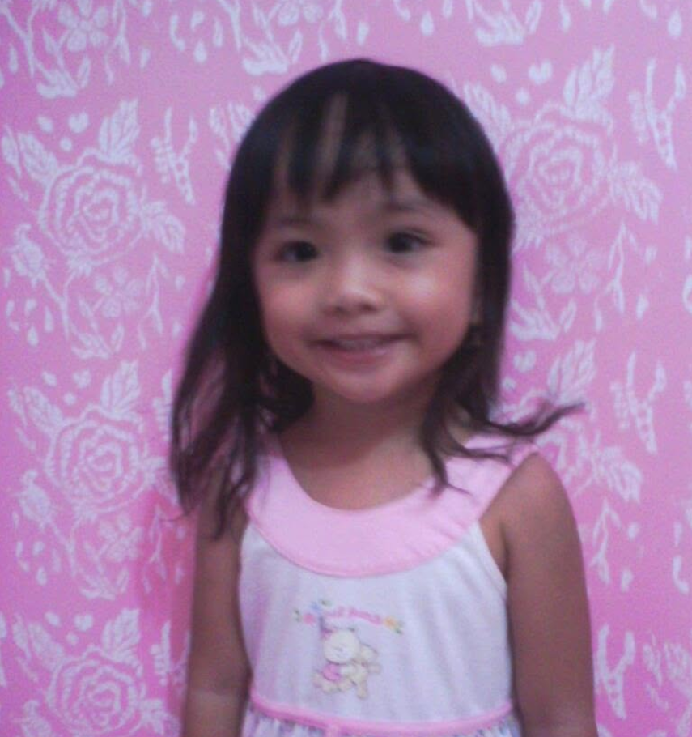

Grade 10 Student | ICT 10
Welcome to my Second Quarter ICT 10 Portfolio! Explore my projects, discover my interests, and get to know the person behind the work.
Hi! I'm Mariel Dieta, a Grade 10 student with big dreams and a passion for making the most out of life. I love going out, discovering new experiences, and investing time in myself. I believe that making yourself feel good is never a waste of time. I also enjoy appreciating the little things that make life meaningful.
My dream is to have a successful career in my chosen medical profession. I want to build a future where I can use my knowledge and skills to help others and make a meaningful difference in people's lives. I understand that reaching this dream requires dedication, patience, and hard work. I am willing to embrace every challenge and opportunity that will help me grow.
— A reminder to myself